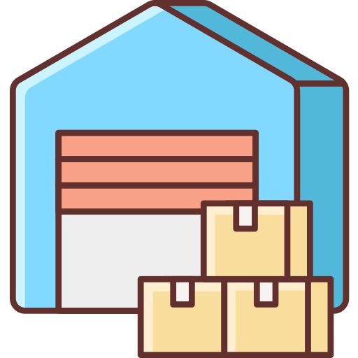

<mat-toolbar class="menu" color="primary">

    
    <span>Sistema de Inventario</span>
    <span class="spacer"></span>

    <div class="menu-navigation">
        <button *ngFor="let item of items" class="menu-button margin" mat-button routerLink="{{item.route}}" routerLinkActive="active">
          <mat-icon>{{item.icon}}</mat-icon>{{item.text}}
        </button>

        <button mat-raised-button color="basic" (click)="logout()" aria-label="Menu logout">
            <span style="font-size: 18;">Salir</span>
            <mat-icon>person</mat-icon> 
        </button>
    </div>

    <div class="mobile-navigation">
        <button mat-icon-button [matMenuTriggerFor]="menu" aria-label="Mobile menu">
            <mat-icon>more_vert</mat-icon>
        </button>
        <mat-menu #menu="matMenu" style="padding: 0;">
            <div class="mobile-items" style="padding: 0 10px;">
                <ng-container *ngFor="let item of items">
                    <button class="menu-button" mat-button routerLink="{{item.route}}" routerLinkActive="active">
                        <mat-icon>{{item.icon}}</mat-icon>{{item.text}}
                      </button>
                    <mat-divider></mat-divider>
                </ng-container>

                <button class="menu-button" mat-button color="basic" (click)="logout()" aria-label="Menu logout">
                      <mat-icon>person</mat-icon> Salir
                </button>
                <mat-divider></mat-divider>
            </div>
        </mat-menu>
    </div>
</mat-toolbar>


<!-- Hero -->
<div class="pattern-bg"></div>